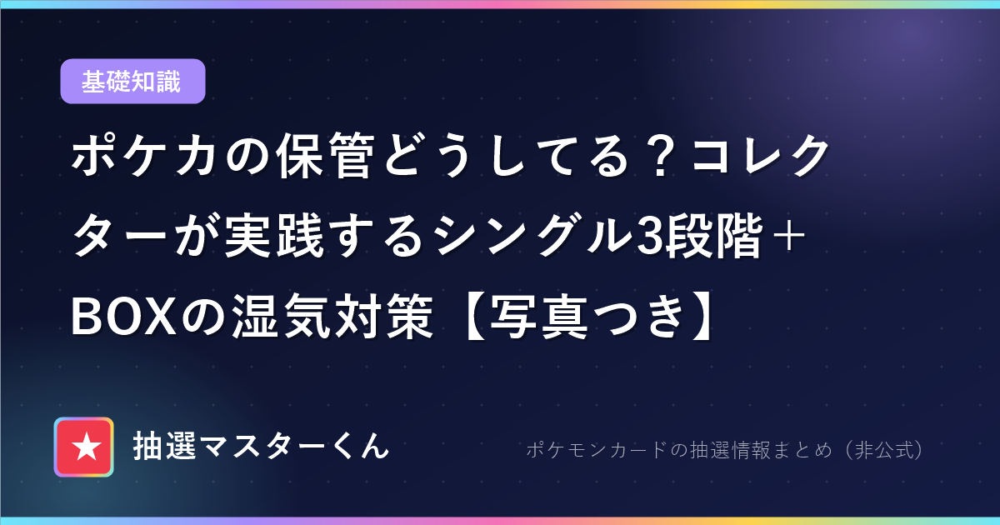
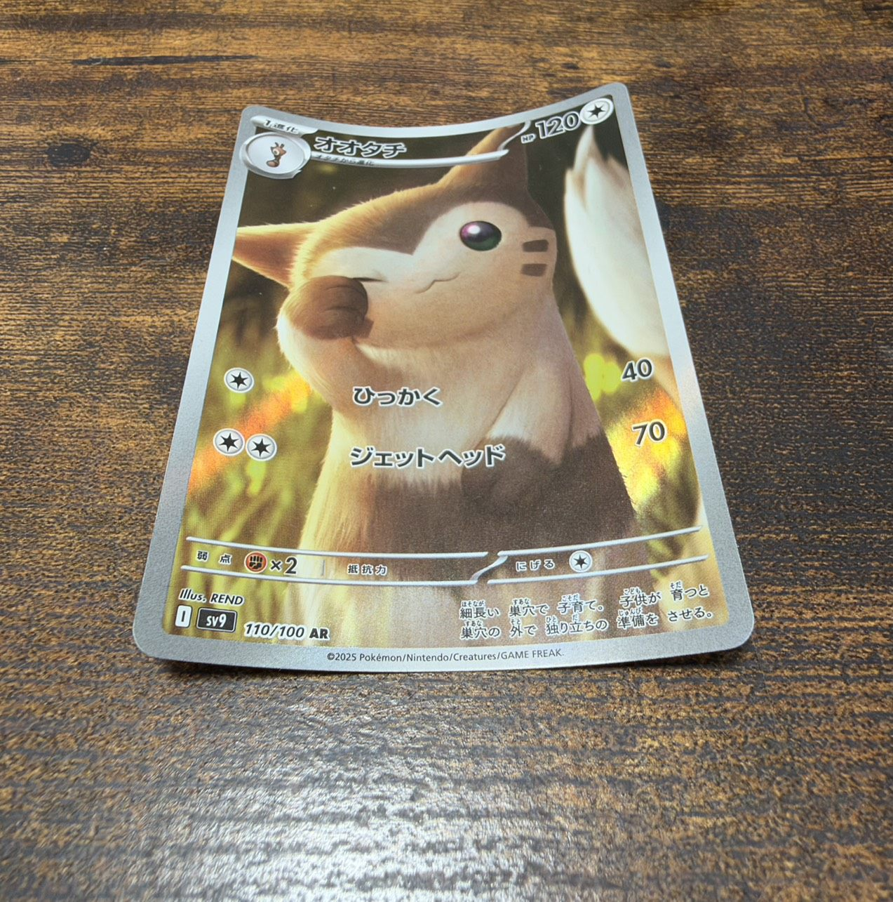
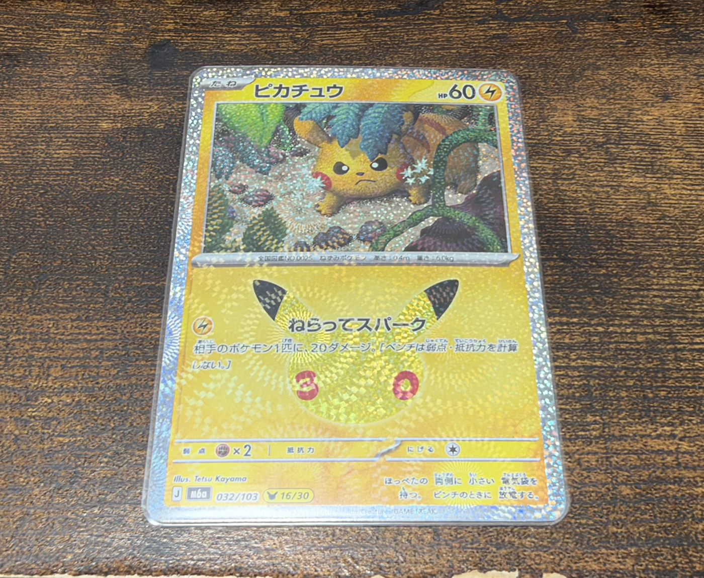
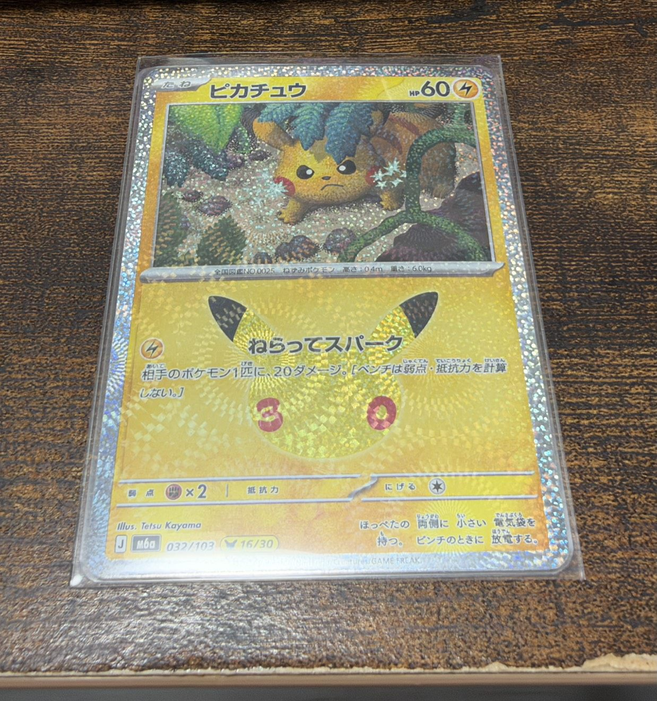
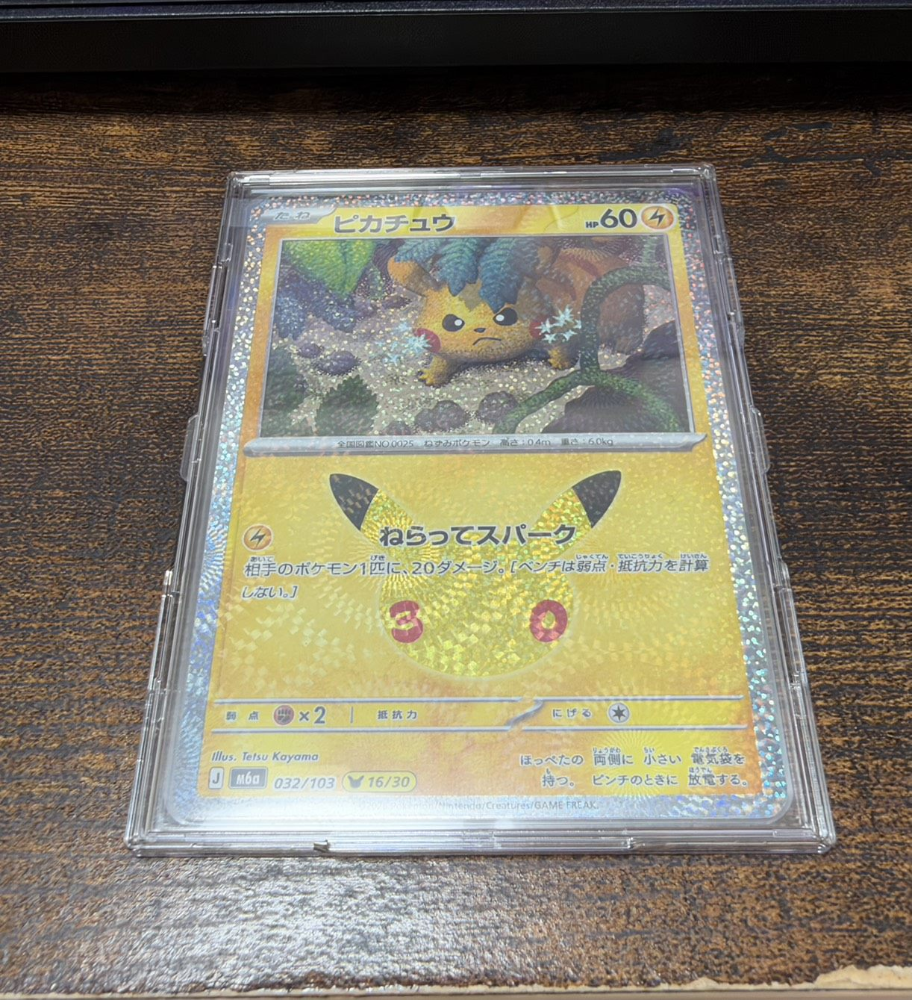
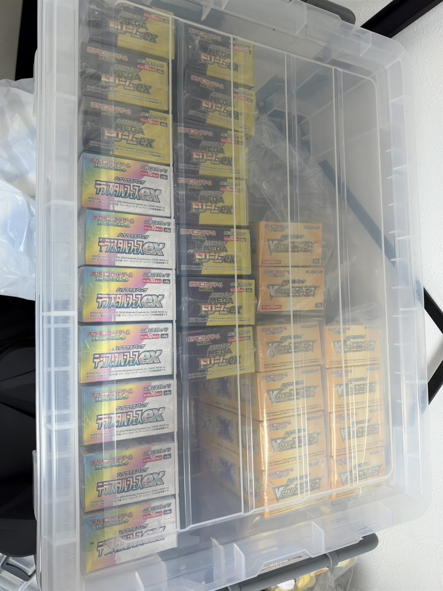
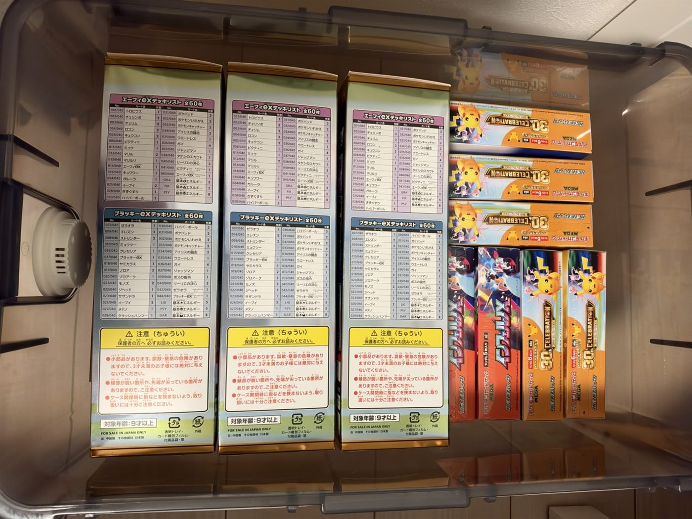
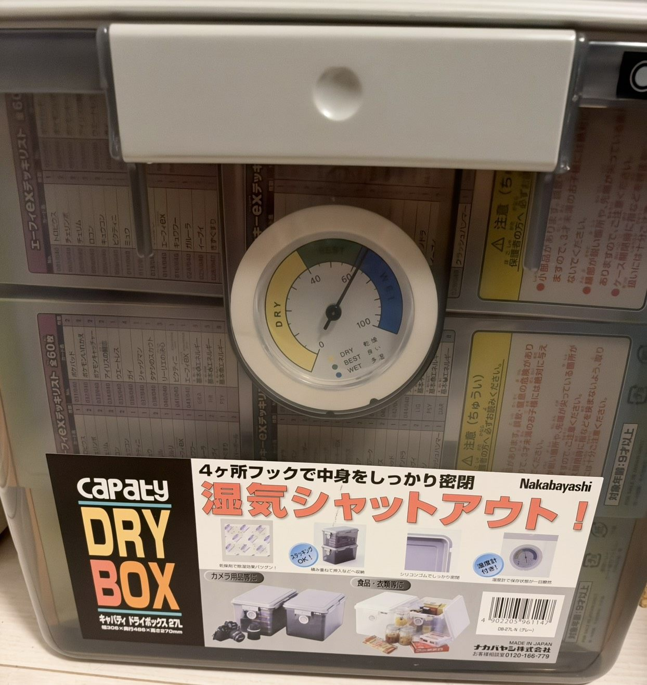
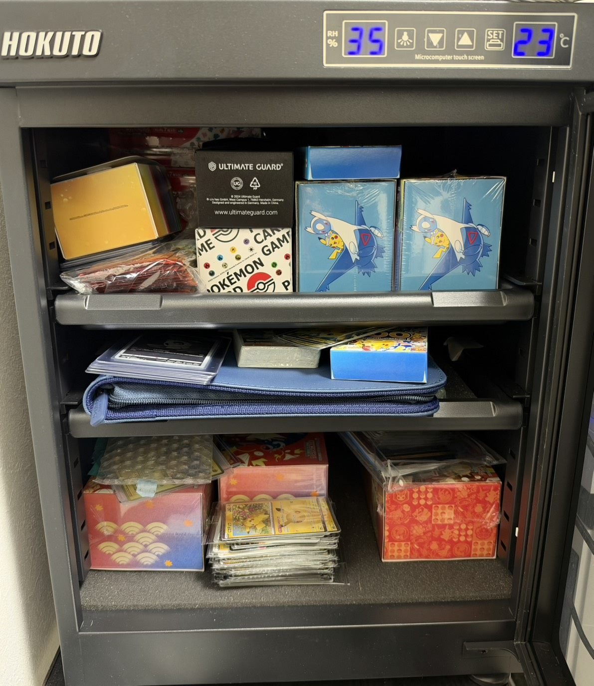

ポケカの保管どうしてる？コレクターが実践するシングル3段階＋BOXの湿気対策【写真つき】

この記事には広告（Amazonアソシエイト）が含まれます。Amazonのアソシエイトとして、抽選マスターくんは適格販売により収入を得ています。
抽選でやっと当たったBOXや、パックから出たお気に入りのカード。みなさんはどうやって保管していますか？
この記事では、コレクターでもある運営者が実際にやっている保管方法を、写真つきで紹介します。シングルカードは手軽な順に3段階、BOXは「ふつうの保管」と「大事なBOXの保管」に分けてまとめました。
この記事の要点
- カードもBOXも紙でできているので、湿気にも乾燥にも弱い。保管の湿度は40〜50%くらいが目安
- 放っておくと、キラカードが大きく反ってしまうことも（運営者の失敗談つき）
- シングルは①カドまる → ②カドまる＋縦入れのアウタースリーブ → ③フルプロテクト、の3段階で守りを強くする
- BOXはふだんは積み重ねられる収納ボックス、大事なBOXはドライボックスや防湿庫へ
カードやBOXは湿気と乾燥に弱い
ポケモンカードもBOXの箱も、もとは紙です。紙は空気中の水分を吸ったり出したりして、少しずつ伸び縮みします。そのため、保管する場所の湿度によって次のようなことが起こります。
- 湿気が多いとき：カードが水分を吸って反る・波打つ。湿度が高い状態が続くと、カビやシミの原因にもなります（紙の保存では、湿度65%をこえる状態が続くとカビが出やすいと言われています）
- 乾燥しすぎのとき：今度は水分が抜けて、反対側に反ることがあります。冬に暖房の効いた部屋に置きっぱなしにするのも要注意です
- 湿度の上がり下がりが大きいとき：伸び縮みをくり返すことで、反りやすくなります
キラカードは、表面にキラキラの加工がある分、表と裏で水分の吸い方が違うため、ふつうのカードより反りやすいと言われています。
放っておくとカードが曲がってしまうことも
これは運営者の家にある、うっかり放置してしまったキラカードです。湿気を吸って大きく反り、見るも無残な姿に……。

一度ここまで反ってしまうと、元に戻すのはかなり大変です。「あとでスリーブに入れよう」と思っているうちに季節が変わってしまうこともあるので、手に入れたらすぐ対策するのがおすすめです。
シングルカードの保管方法（3段階）
ここからは、運営者が実際にやっているシングルカードの守り方です。手軽な順に3段階で紹介します。カードの大切さに合わせて選んでください。
段階1：まずは「カドまる」に入れる

いちばんシンプルなのは、カドまるスリーブに入れることです。写真のとおり、ポケモンカードにジャストフィットします。
しかも横から入れるタイプなので、カードを入れやすいのもうれしいところ。たくさんのカードをまとめてスリーブに入れたいときにも向いています。
段階2：カドまる＋アウタースリーブ（縦入れ）の二重がけ

もう少ししっかり守りたいカードは、カドまるに入れたうえで、アウタースリーブをもう1枚重ねます。サイズは66×91mm〜92mmの縦入れのものを選びます。
縦入れを選ぶのには理由があります。カドまるは横入れなので、外側を縦入れにすると、入れ口の向きが互い違いになります。こうすると入れ口がふさがれて、余計な空気（湿気やほこり）が入りにくくなるのです。
段階3：大事なカードは「フルプロテクト」

高額なカードや思い出のカードは、フルプロテクトスリーブに入れておけば安心です。
段階2の二重がけでも十分ですが、スリーブはやわらかいのでぶつけたときの衝撃には弱いのが弱点です。フルプロテクトなら衝撃もカバーでき、湿気や乾燥からもしっかり守れます。
しかもとてもスリム。何枚もコレクションしても、まったくかさばりません。運営者も、お気に入りのカードは全部このスタイルで保管しています！
PSAなどの鑑定に出す予定のカードは、鑑定の決まりに合わせた入れ方が必要です。くわしくはポケカをPSA鑑定に出してみたをどうぞ。
BOXをふつうに保管する場合

未開封のBOXは、ふたの付いた収納ボックスにまとめて入れています。運営者が使っているのは、透明で中が見えるタイプです。
写真ではまだ全部うまっていませんが、ハイクラスパックのBOXが1列に10個、シンデレラフィットします。積み重ねもできるので、BOXが増えても安心です。
大事なBOXはドライボックスと防湿庫で
少し高価なBOXや、絶対に状態を落としたくないものは、次の2種類で管理しています。
ドライボックス（電気を使わない密閉タイプ）


ふたを4か所のフックでとめる密閉タイプのドライボックスです。電気を使わないので、自動で湿度を調整することはできませんが、しっかり閉じられるので湿気の多い時期でも安心です。
外側に湿度計が付いているので、中の様子を開けずに確認できるのも便利です。湿度が上がってきたら、乾燥剤を入れたり取りかえたりして調整しましょう。最近は人気で、品薄が続いているようです。
防湿庫（設定した湿度を自動で保つタイプ）

いちばん大事なものは、防湿庫に入れています。デジタルの湿度計が付いていて、設定した湿度に自動で保ってくれるので、梅雨も冬も1年中安心です。
- ライトが付くので、中に入れたものが見やすい
- 鍵も付いているので、防犯の面でも安心
- とても大容量。これからの30周年関連の商品をしまうのにもぴったり
運営者は、奥にポケモンカード151のBOX、中段にお気に入りのシングルやプロモカード、下段に過去のスペシャルBOXを入れています。
防湿庫の湿度は低くしすぎないのがポイントです。カードやBOXなら40〜50%くらいを目安に設定するとよいでしょう（機種ごとの設定方法は説明書をご確認ください）。
まとめ・よくある疑問
| しまうもの | おすすめの方法 |
|---|---|
| ふつうのシングル | カドまるに入れる |
| 大事なシングル | カドまる＋縦入れのアウタースリーブ |
| 高額・お気に入りのシングル | フルプロテクトスリーブ |
| 未開封のBOX（たくさん） | ふた付きの収納ボックス＋乾燥剤 |
| 高価なBOX・大事なもの | ドライボックス、または防湿庫 |
反ってしまったカードは元に戻せる？
軽い反りなら、乾燥剤と一緒に密閉容器に入れておくと少しずつ戻ることがあります。ただし、急に乾かしすぎると反対側に反ったり、カードを傷めたりすることもあります。反らせないように最初から守るのがいちばんです。
BOXはシュリンクを付けたまま保管したほうがいい？
シュリンク（透明のフィルム）は未開封の証明にもなるので、破らずにそのまま保管するのがおすすめです。シュリンクについてはシュリンク付きで届く抽選のまとめでもくわしく紹介しています。
せっかく手に入れたカードやBOXを、きれいなまま長く楽しみましょう！
出典
- 国立国会図書館「温湿度管理」（紙の資料の保存と湿度・カビの関係）
紹介した商品は、運営者が実際に使っているものです。使い方や感想は運営者の体験にもとづきます。
当サイトは非公式のファンサイトです。価格・日程などは記事公開時点の情報なので、最新の情報は公式サイトや各販売店でご確認ください。